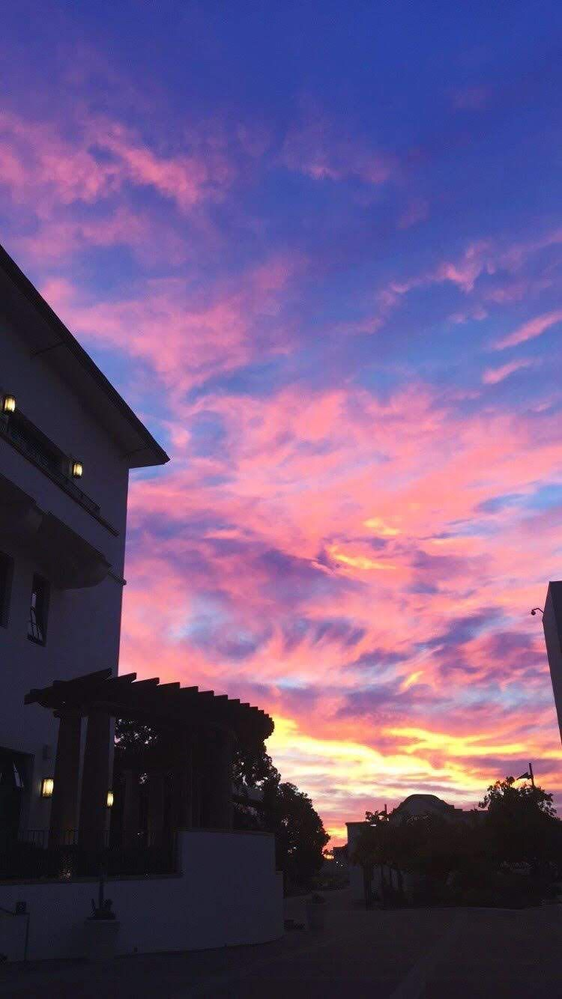

Pasatiempos

Bailar
Uno de mis pasatiempos favoritos es bailar, desde muy chica me intereso esta disciplina, pude hacer parte de un grupo de baile durante muchos años en el colegio, y creo que era mi manera de desestresarme, actualmente no lo hago muy seguido pero cuando lo hago me encanta.
Fotografia
Me gusta fotografiar paisajes especialmente los cielos porque creo que la belleza esta en cosas tan comunes como un atardecer, y no solo eso, si no que en ocasiones las fotos capturan momentos y vivencias que en mi opinión es lo magico de esta actividad.